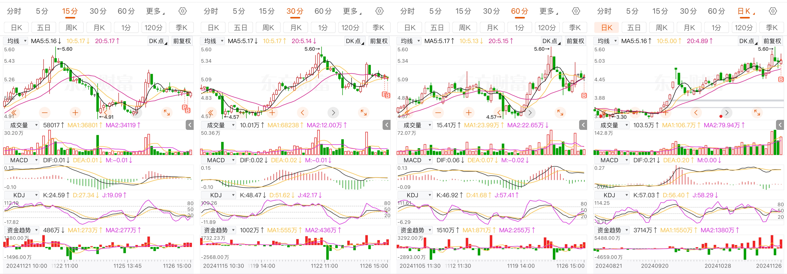

11月26日
天下秀，买在5分线金叉，1/4仓位，资金介入较为密集。
分歧表现，30分KDJ并未拐头，形成死叉，30分钟macd钝化。
买点必须落在K线MACD绿柱内
明日情绪下探，找准时间，买入
中海达的问题，是个深刻的问题。昨日判断早盘30分钟内，就需要跑，一直犹犹豫豫。
以上是盘中的想法
天下秀：

日线：沿5日线上行，MACD和KDJ指标钝化，资金密集流入
60分钟：macd绿柱，KDJ指标金叉，看多
30分钟：MACD 指标钝化，kdj死叉，但是资金密集流入，观察，30分钟KDJ指标拐头。
5/15分钟，指标均为kdj金叉突破。
昨日的票，可谓死伤惨重
凯淳股份，修复失败：修复票，在趋势未明朗前，坚决不买入
今天国际，30分钟/60分钟金叉，直接摁灭了，盘中无抵抗。60/30/15，全线看空。